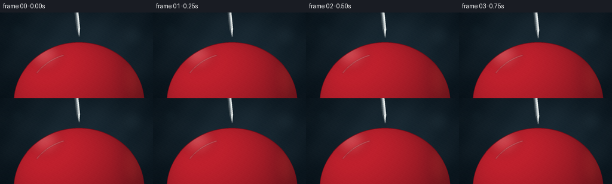
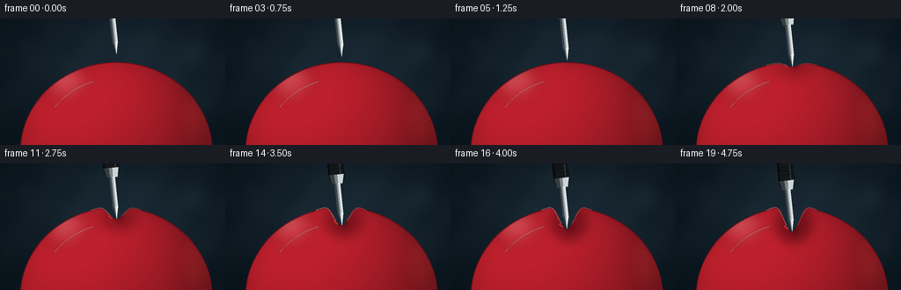
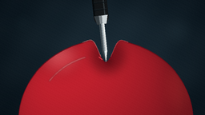

CODING AGENTS AS PIXEL WORLD MODELS
traex/GPT-5.6-Sol · mechanics_0030
点击播放 · 原生 RGB 像素
逐轮保存的候选
回放视频、检查图与代码变化。
每份候选均可单独播放。实际图片检查记录在下方工具轨迹中。
候选 01播放与检查图
点击播放 · 原生 RGB 像素


展开代码变化
--- 上一保存版本
+++ 本次保存版本
@@ -0,0 +1,290 @@
+from pathlib import Path
+import json
+import math
+import numpy as np
+from PIL import Image, ImageDraw, ImageFilter
+import artifact_io
+
+CASE_DIR = Path(__file__).resolve().parent
+SPEC = json.loads((CASE_DIR / "task_spec.json").read_text())
+W, H = int(SPEC["width"]), int(SPEC["height"])
+N = int(SPEC["frames"])
+SS = 3
+w, h = W * SS, H * SS
+
+# Logical composition parameters.
+BALLOON_CX, BALLOON_CY = 132.0, 151.0
+BALLOON_RX, BALLOON_RY = 109.0, 101.0
+CONTACT_X = 132.0
+
+
+def sc(v):
+ return int(round(v * SS))
+
+
+def pts_scaled(points):
+ return [(sc(x), sc(y)) for x, y in points]
+
+
+def smoothstep(t):
+ t = max(0.0, min(1.0, t))
+ return t * t * (3.0 - 2.0 * t)
+
+
+def top_profile(x, depth):
+ """Upper outline of a spherical balloon plus a localized elastic dimple."""
+ q = max(0.0, 1.0 - ((x - BALLOON_CX) / BALLOON_RX) ** 2)
+ sphere_y = BALLOON_CY - BALLOON_RY * math.sqrt(q)
+ if depth <= 0:
+ return sphere_y
+ dx = x - CONTACT_X
+ # Narrow dimple and tiny raised shoulders convey stretched, taut rubber.
+ dimple = depth * math.exp(-((abs(dx) / 11.2) ** 2.25))
+ shoulder = 2.15 * (depth / 27.5) * (
+ math.exp(-((dx - 17.0) / 7.0) ** 2) +
+ math.exp(-((dx + 17.0) / 7.0) ** 2)
+ )
+ return sphere_y + dimple - shoulder
+
+
+def balloon_mask(depth):
+ left, right = BALLOON_CX - BALLOON_RX, BALLOON_CX + BALLOON_RX
+ xs = np.linspace(left, right, 660)
+ top = [(float(x), top_profile(float(x), depth)) for x in xs]
+ # Bottom half of the ellipse, right to left.
+ bottom = []
+ for theta in np.linspace(0.0, math.pi, 500):
+ bottom.append((BALLOON_CX + BALLOON_RX * math.cos(theta),
+ BALLOON_CY + BALLOON_RY * math.sin(theta)))
+ mask = Image.new("L", (w, h), 0)
+ ImageDraw.Draw(mask).polygon(pts_scaled(top + bottom), fill=255)
+ return mask, top
+
+
+def make_background():
+ yy, xx = np.mgrid[0:h, 0:w].astype(np.float32)
+ X, Y = xx / SS, yy / SS
+ # Dark cool studio backdrop, brighter behind the subject.
+ glow = np.exp(-(((X - 142) / 125) ** 2 + ((Y - 62) / 87) ** 2))
+ vignette = np.clip(((X - W/2) / 182) ** 2 + ((Y - H/2) / 118) ** 2, 0, 1)
+ rgb = np.empty((h, w, 3), np.float32)
+ rgb[..., 0] = 11 + 15 * glow - 5 * vignette
+ rgb[..., 1] = 21 + 21 * glow - 6 * vignette
+ rgb[..., 2] = 27 + 25 * glow - 5 * vignette
+ # Fixed, subtle studio texture.
+ texture = 1.1 * np.sin(X * 0.113 + Y * 0.071) + 0.7 * np.sin(X * 0.031 - Y * 0.127)
+ rgb += texture[..., None]
+ bg = Image.fromarray(np.uint8(np.clip(rgb, 0, 255)), "RGB")
+
+ # Defocused background lights add depth while remaining unobtrusive.
+ bokeh = Image.new("RGBA", (w, h), (0, 0, 0, 0))
+ bd = ImageDraw.Draw(bokeh)
+ for x, y, r, color in [
+ (29, 29, 12, (62, 101, 111, 20)),
+ (223, 39, 18, (74, 105, 115, 17)),
+ (194, 14, 7, (150, 176, 174, 14)),
+ (55, 80, 7, (92, 132, 137, 12)),
+ ]:
+ bd.ellipse((sc(x-r), sc(y-r), sc(x+r), sc(y+r)), fill=color)
+ bokeh = bokeh.filter(ImageFilter.GaussianBlur(sc(7)))
+ return Image.alpha_composite(bg.convert("RGBA"), bokeh)
+
+
+BACKGROUND = make_background()
+
+# Precompute sphere lighting in logical coordinates at supersampled resolution.
+yy, xx = np.mgrid[0:h, 0:w].astype(np.float32)
+X, Y = xx / SS, yy / SS
+NX = (X - BALLOON_CX) / BALLOON_RX
+NY = (Y - BALLOON_CY) / BALLOON_RY
+NZ = np.sqrt(np.clip(1.0 - NX * NX - NY * NY, 0.0, 1.0))
+light = np.clip(NX * -0.44 + NY * -0.60 + NZ * 0.67, -0.1, 1.0)
+light = 0.47 + 0.53 * np.clip(light, 0, 1)
+# Rich red latex with warmer lit areas and deeper crimson edges.
+balloon_rgb = np.empty((h, w, 4), np.uint8)
+balloon_rgb[..., 0] = np.uint8(np.clip(160 * light + 35, 0, 255))
+balloon_rgb[..., 1] = np.uint8(np.clip(25 * light + 8, 0, 255))
+balloon_rgb[..., 2] = np.uint8(np.clip(35 * light + 11, 0, 255))
+balloon_rgb[..., 3] = 255
+BALL_SHADE = Image.fromarray(balloon_rgb, "RGBA")
+
+
+def clipped_overlay(base, overlay, mask):
+ ov = np.asarray(overlay).copy()
+ m = np.asarray(mask, dtype=np.uint16)
+ ov[..., 3] = ((ov[..., 3].astype(np.uint16) * m) // 255).astype(np.uint8)
+ return Image.alpha_composite(base, Image.fromarray(ov, "RGBA"))
+
+
+def axis_point(tip, up_distance, lateral=0.0):
+ # Needle axis leans subtly to the right as it descends.
+ dx, dy = 0.105, 0.9945
+ px, py = -dy, dx
+ return (tip[0] - dx * up_distance + px * lateral,
+ tip[1] - dy * up_distance + py * lateral)
+
+
+def axial_quad(tip, up0, up1, half0, half1):
+ return [axis_point(tip, up0, -half0), axis_point(tip, up0, half0),
+ axis_point(tip, up1, half1), axis_point(tip, up1, -half1)]
+
+
+def draw_needle(scene, tip):
+ layer = Image.new("RGBA", (w, h), (0, 0, 0, 0))
+ d = ImageDraw.Draw(layer)
+
+ # Black precision-tool grip.
+ grip = axial_quad(tip, 56, 116, 9.2, 9.2)
+ d.polygon(pts_scaled(grip), fill=(18, 21, 23, 255))
+ # Rounded lower collar on grip.
+ c = axis_point(tip, 56)
+ d.ellipse((sc(c[0]-9.2), sc(c[1]-9.2), sc(c[0]+9.2), sc(c[1]+9.2)), fill=(20, 23, 25, 255))
+ # Grip side shade and restrained highlight.
+ d.polygon(pts_scaled(axial_quad(tip, 56, 116, 9.2, 9.2)[:1] + []), fill=(0,0,0,0)) if False else None
+ d.line(pts_scaled([axis_point(tip, 58, -5.0), axis_point(tip, 114, -5.0)]),
+ fill=(69, 73, 74, 150), width=sc(1.25))
+ d.line(pts_scaled([axis_point(tip, 58, 7.8), axis_point(tip, 114, 7.8)]),
+ fill=(3, 5, 6, 210), width=sc(2.0))
+ for u in (65, 74, 83, 92, 101, 110):
+ a, b = axis_point(tip, u, -8.1), axis_point(tip, u, 8.1)
+ d.line(pts_scaled([a, b]), fill=(5, 7, 8, 160), width=sc(1.0))
+ a2, b2 = axis_point(tip, u+1.1, -7.4), axis_point(tip, u+1.1, 7.4)
+ d.line(pts_scaled([a2, b2]), fill=(47, 51, 52, 90), width=sc(0.65))
+
+ # Satin steel ferrule.
+ ferrule = axial_quad(tip, 47, 58, 5.8, 8.2)
+ d.polygon(pts_scaled(ferrule), fill=(120, 128, 132, 255))
+ d.polygon(pts_scaled([axis_point(tip,47,-5.8), axis_point(tip,47,-1.0),
+ axis_point(tip,58,-1.3), axis_point(tip,58,-8.2)]),
+ fill=(205, 213, 215, 255))
+ d.polygon(pts_scaled([axis_point(tip,47,2.4), axis_point(tip,47,5.8),
+ axis_point(tip,58,8.2), axis_point(tip,58,2.8)]),
+ fill=(53, 61, 65, 255))
+ d.line(pts_scaled([axis_point(tip, 47, -5.6), axis_point(tip, 47, 5.6)]),
+ fill=(34, 39, 41, 240), width=sc(1.0))
+
+ # Polished shaft built from longitudinal tonal bands.
+ shaft = axial_quad(tip, 13, 48, 3.15, 3.15)
+ d.polygon(pts_scaled(shaft), fill=(131, 143, 149, 255))
+ d.polygon(pts_scaled([axis_point(tip,13,-3.15), axis_point(tip,13,-0.7),
+ axis_point(tip,48,-0.7), axis_point(tip,48,-3.15)]),
+ fill=(229, 235, 235, 255))
+ d.polygon(pts_scaled([axis_point(tip,13,1.35), axis_point(tip,13,3.15),
+ axis_point(tip,48,3.15), axis_point(tip,48,1.35)]),
+ fill=(60, 71, 77, 255))
+ d.line(pts_scaled([axis_point(tip, 14, -1.45), axis_point(tip, 47, -1.45)]),
+ fill=(255, 255, 250, 190), width=sc(0.7))
+
+ # Long sharp conical point.
+ point_poly = [axis_point(tip, 13.5, -3.2), tip, axis_point(tip, 13.5, 3.2)]
+ d.polygon(pts_scaled(point_poly), fill=(140, 153, 159, 255))
+ d.polygon(pts_scaled([axis_point(tip,13.5,-3.2), tip, axis_point(tip,13.5,-0.45)]),
+ fill=(235, 241, 239, 255))
+ d.polygon(pts_scaled([axis_point(tip,13.5,1.15), tip, axis_point(tip,13.5,3.2)]),
+ fill=(55, 66, 72, 255))
+ # Fine edge glint makes the point read as genuinely sharp.
+ d.line(pts_scaled([axis_point(tip, 13.0, -2.7), tip]),
+ fill=(255, 255, 252, 215), width=sc(0.55))
+ return Image.alpha_composite(scene, layer)
+
+
+def render_frame(index):
+ t = index / (N - 1)
+ travel = 0.15 * t + 0.85 * smoothstep(t)
+ tip_y = 40.0 + 37.0 * travel
+ tip_x = CONTACT_X + 0.35 * math.sin(t * math.pi) # almost imperceptible hand-settle
+ base_center_top = top_profile(CONTACT_X, 0.0)
+ depth = max(0.0, tip_y + 0.65 - base_center_top)
+ tip = (tip_x, tip_y)
+
+ scene = BACKGROUND.copy()
+ mask, top = balloon_mask(depth)
+ scene.paste(BALL_SHADE, (0, 0), mask)
+
+ # Soft latex highlights, clipped strictly to the balloon silhouette.
+ gloss = Image.new("RGBA", (w, h), (0, 0, 0, 0))
+ gd = ImageDraw.Draw(gloss)
+ gd.ellipse((sc(48), sc(49), sc(101), sc(93)), fill=(255, 187, 184, 46))
+ gd.ellipse((sc(60), sc(54), sc(81), sc(73)), fill=(255, 240, 228, 80))
+ gd.ellipse((sc(205), sc(73), sc(246), sc(145)), fill=(255, 87, 71, 28))
+ gloss = gloss.filter(ImageFilter.GaussianBlur(sc(9)))
+ scene = clipped_overlay(scene, gloss, mask)
+
+ # A crisp, elongated soft-box reflection makes the rubber feel glossy.
+ glint = Image.new("RGBA", (w, h), (0, 0, 0, 0))
+ gld = ImageDraw.Draw(glint)
+ arc = []
+ for a in np.linspace(3.78, 4.42, 70):
+ arc.append((BALLOON_CX + 88.0 * math.cos(a), BALLOON_CY + 83.0 * math.sin(a)))
+ gld.line(pts_scaled(arc), fill=(255, 220, 216, 105), width=sc(1.8))
+ glint = glint.filter(ImageFilter.GaussianBlur(sc(0.55)))
+ scene = clipped_overlay(scene, glint, mask)
+
+ # Contact shadow grows gradually down the dimple and is clipped to latex.
+ if depth > 0:
+ shadow = Image.new("RGBA", (w, h), (0, 0, 0, 0))
+ sd = ImageDraw.Draw(shadow)
+ strength = int(35 + 85 * min(1.0, depth / 27.0))
+ sd.ellipse((sc(CONTACT_X-18), sc(base_center_top-2),
+ sc(CONTACT_X+22), sc(base_center_top + depth + 12)),
+ fill=(47, 0, 8, strength))
+ shadow = shadow.filter(ImageFilter.GaussianBlur(sc(6.0)))
+ scene = clipped_overlay(scene, shadow, mask)
+
+ # Fine silhouette and taut shoulder highlights.
+ contour = Image.new("RGBA", (w, h), (0, 0, 0, 0))
+ cd = ImageDraw.Draw(contour)
+ cd.line(pts_scaled(top), fill=(105, 13, 25, 210), width=sc(0.9))
+ if depth > 0.4:
+ left_ridge = [(x, top_profile(x, depth)-0.55) for x in np.linspace(CONTACT_X-29, CONTACT_X-6.2, 42)]
+ right_ridge = [(x, top_profile(x, depth)-0.42) for x in np.linspace(CONTACT_X+6.2, CONTACT_X+28, 42)]
+ alpha = int(55 + 80 * min(1.0, depth/20.0))
+ cd.line(pts_scaled(left_ridge), fill=(255, 126, 124, alpha), width=sc(1.05))
+ cd.line(pts_scaled(right_ridge), fill=(235, 77, 85, alpha), width=sc(0.85))
+ scene = Image.alpha_composite(scene, contour)
+
+ # Narrow needle shadow is cast just to the right onto the upper balloon.
+ if tip_y > base_center_top - 9:
+ cast = Image.new("RGBA", (w, h), (0, 0, 0, 0))
+ cdraw = ImageDraw.Draw(cast)
+ upper = axis_point(tip, 42, 4.0)
+ lower = (tip[0] + 4.2, tip[1] + 3.0)
+ cdraw.line(pts_scaled([upper, lower]), fill=(26, 2, 7, 105), width=sc(5.0))
+ cast = cast.filter(ImageFilter.GaussianBlur(sc(3.2)))
+ scene = clipped_overlay(scene, cast, mask)
+
+ scene = draw_needle(scene, tip)
+
+ # Tiny rubber contact lips sit in front of the cone edges at deeper press.
+ if depth > 3.0:
+ lips = Image.new("RGBA", (w, h), (0, 0, 0, 0))
+ ld = ImageDraw.Draw(lips)
+ amt = min(1.0, depth / 22.0)
+ y_l = top_profile(CONTACT_X - 5.2, depth)
+ y_r = top_profile(CONTACT_X + 5.2, depth)
+ ld.line(pts_scaled([(CONTACT_X-8.8, y_l-2.0), (CONTACT_X-4.2, y_l+1.2)]),
+ fill=(224, 56, 67, int(130+90*amt)), width=sc(1.35))
+ ld.line(pts_scaled([(CONTACT_X+4.0, y_r+1.0), (CONTACT_X+8.7, y_r-2.0)]),
+ fill=(118, 12, 28, int(125+90*amt)), width=sc(1.35))
+ scene = Image.alpha_composite(scene, lips)
+
+ # Downsample with high-quality antialiasing.
+ frame = scene.convert("RGB").resize((W, H), Image.Resampling.LANCZOS)
+ arr = np.asarray(frame).astype(np.int16)
+ # Fixed fine grain avoids sterile vector-flat surfaces without temporal flicker.
+ gy, gx = np.mgrid[0:H, 0:W]
+ grain = (((gx * 37 + gy * 17) % 13) - 6) * 0.18
+ arr = np.clip(arr + grain[..., None], 0, 255).astype(np.uint8)
+ return arr
+
+
+def main():
+ frames = np.stack([render_frame(i) for i in range(N)], axis=0)
+ assert frames.shape == (N, H, W, 3)
+ assert frames.dtype == np.uint8
+ artifact_io.save(frames, CASE_DIR)
+ print(f"saved {N} RGB frames at {W}x{H}")
+
+
+if __name__ == "__main__":
+ main()
可观测工具轨迹
实际执行的命令与返回图片。
命令 1exit 0
/bin/bash -lc "cat prompt.txt && printf '\\n--- GENERATION_RULES.md ---\\n' && cat GENERATION_RULES.md && printf '\\n--- task_spec.json ---\\n' && cat task_spec.json"
命令 2exit 0
/bin/bash -lc "find . -maxdepth 3 -type f -printf '%p\\n' | sort && printf '\\n--- tools ---\\n' && command -v ffmpeg || true && command -v blender || true && command -v python3 || true"
命令 3exit 0
/bin/bash -lc 'cat artifact_io.py'
命令 4exit 0
/bin/bash -lc "cat > generate.py <<'PY'
from pathlib import Path
import json
import math
import numpy as np
from PIL import Image, ImageDraw, ImageFilter
import artifact_io
CASE_DIR = Path(__file__).resolve().parent
SPEC = json.loads((CASE_DIR / \"task_spec.json\").read_text())
W, H = int(SPEC[\"width\"]), int(SPEC[\"height\"])
N = int(SPEC[\"frames\"])
SS = 3
w, h = W * SS, H * SS
# Logical composition parameters.
BALLOON_CX, BALLOON_CY = 132.0, 151.0
BALLOON_RX, BALLOON_RY = 109.0, 101.0
CONTACT_X = 132.0
def sc(v):
return int(round(v * SS))
def pts_scaled(points):
return [(sc(x), sc(y)) for x, y in points]
def smoothstep(t):
t = max(0.0, min(1.0, t))
return t * t * (3.0 - 2.0 * t)
def top_profile(x, depth):
\"\"\"Upper outline of a spherical balloon plus a localized elastic dimple.\"\"\"
q = max(0.0, 1.0 - ((x - BALLOON_CX) / BALLOON_RX) ** 2)
sphere_y = BALLOON_CY - BALLOON_RY * math.sqrt(q)
if depth <= 0:
return sphere_y
dx = x - CONTACT_X
# Narrow dimple and tiny raised shoulders convey stretched, taut rubber.
dimple = depth * math.exp(-((abs(dx) / 11.2) ** 2.25))
shoulder = 2.15 * (depth / 27.5) * (
math.exp(-((dx - 17.0) / 7.0) ** 2) +
math.exp(-((dx + 17.0) / 7.0) ** 2)
)
return sphere_y + dimple - shoulder
def balloon_mask(depth):
left, right = BALLOON_CX - BALLOON_RX, BALLOON_CX + BALLOON_RX
xs = np.linspace(left, right, 660)
top = [(float(x), top_profile(float(x), depth)) for x in xs]
# Bottom half of the ellipse, right to left.
bottom = []
for theta in np.linspace(0.0, math.pi, 500):
bottom.append((BALLOON_CX + BALLOON_RX * math.cos(theta),
BALLOON_CY + BALLOON_RY * math.sin(theta)))
mask = Image.new(\"L\", (w, h), 0)
ImageDraw.Draw(mask).polygon(pts_scaled(top + bottom), fill=255)
return mask, top
def make_background():
yy, xx = np.mgrid[0:h, 0:w].astype(np.float32)
X, Y = xx / SS, yy / SS
# Dark cool studio backdrop, brighter behind the subject.
glow = np.exp(-(((X - 142) / 125) ** 2 + ((Y - 62) / 87) ** 2))
vignette = np.clip(((X - W/2) / 182) ** 2 + ((Y - H/2) / 118) ** 2, 0, 1)
rgb = np.empty((h, w, 3), np.float32)
rgb[..., 0] = 11 + 15 * glow - 5 * vignette
rgb[..., 1] = 21 + 21 * glow - 6 * vignette
rgb[..., 2] = 27 + 25 * glow - 5 * vignette
# Fixed, subtle studio texture.
texture = 1.1 * np.sin(X * 0.113 + Y * 0.071) + 0.7 * np.sin(X * 0.031 - Y * 0.127)
rgb += texture[..., None]
bg = Image.fromarray(np.uint8(np.clip(rgb, 0, 255)), \"RGB\")
# Defocused background lights add depth while remaining unobtrusive.
bokeh = Image.new(\"RGBA\", (w, h), (0, 0, 0, 0))
bd = ImageDraw.Draw(bokeh)
for x, y, r, color in [
(29, 29, 12, (62, 101, 111, 20)),
(223, 39, 18, (74, 105, 115, 17)),
(194, 14, 7, (150, 176, 174, 14)),
(55, 80, 7, (92, 132, 137, 12)),
]:
bd.ellipse((sc(x-r), sc(y-r), sc(x+r), sc(y+r)), fill=color)
bokeh = bokeh.filter(ImageFilter.GaussianBlur(sc(7)))
return Image.alpha_composite(bg.convert(\"RGBA\"), bokeh)
BACKGROUND = make_background()
# Precompute sphere lighting in logical coordinates at supersampled resolution.
yy, xx = np.mgrid[0:h, 0:w].astype(np.float32)
X, Y = xx / SS, yy / SS
NX = (X - BALLOON_CX) / BALLOON_RX
NY = (Y - BALLOON_CY) / BALLOON_RY
NZ = np.sqrt(np.clip(1.0 - NX * NX - NY * NY, 0.0, 1.0))
light = np.clip(NX * -0.44 + NY * -0.60 + NZ * 0.67, -0.1, 1.0)
light = 0.47 + 0.53 * np.clip(light, 0, 1)
# Rich red latex with warmer lit areas and deeper crimson edges.
balloon_rgb = np.empty((h, w, 4), np.uint8)
balloon_rgb[..., 0] = np.uint8(np.clip(160 * light + 35, 0, 255))
balloon_rgb[..., 1] = np.uint8(np.clip(25 * light + 8, 0, 255))
balloon_rgb[..., 2] = np.uint8(np.clip(35 * light + 11, 0, 255))
balloon_rgb[..., 3] = 255
BALL_SHADE = Image.fromarray(balloon_rgb, \"RGBA\")
def clipped_overlay(base, overlay, mask):
ov = np.asarray(overlay).copy()
m = np.asarray(mask, dtype=np.uint16)
ov[..., 3] = ((ov[..., 3].astype(np.uint16) * m) // 255).astype(np.uint8)
return Image.alpha_composite(base, Image.fromarray(ov, \"RGBA\"))
def axis_point(tip, up_distance, lateral=0.0):
# Needle axis leans subtly to the right as it descends.
dx, dy = 0.105, 0.9945
px, py = -dy, dx
return (tip[0] - dx * up_distance + px * lateral,
tip[1] - dy * up_distance + py * lateral)
def axial_quad(tip, up0, up1, half0, half1):
return [axis_point(tip, up0, -half0), axis_point(tip, up0, half0),
axis_point(tip, up1, half1), axis_point(tip, up1, -half1)]
def draw_needle(scene, tip):
layer = Image.new(\"RGBA\", (w, h), (0, 0, 0, 0))
d = ImageDraw.Draw(layer)
# Black precision-tool grip.
grip = axial_quad(tip, 56, 116, 9.2, 9.2)
d.polygon(pts_scaled(grip), fill=(18, 21, 23, 255))
# Rounded lower collar on grip.
c = axis_point(tip, 56)
d.ellipse((sc(c[0]-9.2), sc(c[1]-9.2), sc(c[0]+9.2), sc(c[1]+9.2)), fill=(20, 23, 25, 255))
# Grip side shade and restrained highlight.
d.polygon(pts_scaled(axial_quad(tip, 56, 116, 9.2, 9.2)[:1] + []), fill=(0,0,0,0)) if False else None
d.line(pts_scaled([axis_point(tip, 58, -5.0), axis_point(tip, 114, -5.0)]),
fill=(69, 73, 74, 150), width=sc(1.25))
d.line(pts_scaled([axis_point(tip, 58, 7.8), axis_point(tip, 114, 7.8)]),
fill=(3, 5, 6, 210), width=sc(2.0))
for u in (65, 74, 83, 92, 101, 110):
a, b = axis_point(tip, u, -8.1), axis_point(tip, u, 8.1)
d.line(pts_scaled([a, b]), fill=(5, 7, 8, 160), width=sc(1.0))
a2, b2 = axis_point(tip, u+1.1, -7.4), axis_point(tip, u+1.1, 7.4)
d.line(pts_scaled([a2, b2]), fill=(47, 51, 52, 90), width=sc(0.65))
# Satin steel ferrule.
ferrule = axial_quad(tip, 47, 58, 5.8, 8.2)
d.polygon(pts_scaled(ferrule), fill=(120, 128, 132, 255))
d.polygon(pts_scaled([axis_point(tip,47,-5.8), axis_point(tip,47,-1.0),
axis_point(tip,58,-1.3), axis_point(tip,58,-8.2)]),
fill=(205, 213, 215, 255))
d.polygon(pts_scaled([axis_point(tip,47,2.4), axis_point(tip,47,5.8),
axis_point(tip,58,8.2), axis_point(tip,58,2.8)]),
fill=(53, 61, 65, 255))
d.line(pts_scaled([axis_point(tip, 47, -5.6), axis_point(tip, 47, 5.6)]),
fill=(34, 39, 41, 240), width=sc(1.0))
# Polished shaft built from longitudinal tonal bands.
shaft = axial_quad(tip, 13, 48, 3.15, 3.15)
d.polygon(pts_scaled(shaft), fill=(131, 143, 149, 255))
d.polygon(pts_scaled([axis_point(tip,13,-3.15), axis_point(tip,13,-0.7),
axis_point(tip,48,-0.7), axis_point(tip,48,-3.15)]),
fill=(229, 235, 235, 255))
d.polygon(pts_scaled([axis_point(tip,13,1.35), axis_point(tip,13,3.15),
axis_point(tip,48,3.15), axis_point(tip,48,1.35)]),
fill=(60, 71, 77, 255))
d.line(pts_scaled([axis_point(tip, 14, -1.45), axis_point(tip, 47, -1.45)]),
fill=(255, 255, 250, 190), width=sc(0.7))
# Long sharp conical point.
point_poly = [axis_point(tip, 13.5, -3.2), tip, axis_point(tip, 13.5, 3.2)]
d.polygon(pts_scaled(point_poly), fill=(140, 153, 159, 255))
d.polygon(pts_scaled([axis_point(tip,13.5,-3.2), tip, axis_point(tip,13.5,-0.45)]),
fill=(235, 241, 239, 255))
d.polygon(pts_scaled([axis_point(tip,13.5,1.15), tip, axis_point(tip,13.5,3.2)]),
fill=(55, 66, 72, 255))
# Fine edge glint makes the point read as genuinely sharp.
d.line(pts_scaled([axis_point(tip, 13.0, -2.7), tip]),
fill=(255, 255, 252, 215), width=sc(0.55))
return Image.alpha_composite(scene, layer)
def render_frame(index):
t = index / (N - 1)
travel = 0.15 * t + 0.85 * smoothstep(t)
tip_y = 40.0 + 37.0 * travel
tip_x = CONTACT_X + 0.35 * math.sin(t * math.pi) # almost imperceptible hand-settle
base_center_top = top_profile(CONTACT_X, 0.0)
depth = max(0.0, tip_y + 0.65 - base_center_top)
tip = (tip_x, tip_y)
scene = BACKGROUND.copy()
mask, top = balloon_mask(depth)
scene.paste(BALL_SHADE, (0, 0), mask)
# Soft latex highlights, clipped strictly to the balloon silhouette.
gloss = Image.new(\"RGBA\", (w, h), (0, 0, 0, 0))
gd = ImageDraw.Draw(gloss)
gd.ellipse((sc(48), sc(49), sc(101), sc(93)), fill=(255, 187, 184, 46))
gd.ellipse((sc(60), sc(54), sc(81), sc(73)), fill=(255, 240, 228, 80))
gd.ellipse((sc(205), sc(73), sc(246), sc(145)), fill=(255, 87, 71, 28))
gloss = gloss.filter(ImageFilter.GaussianBlur(sc(9)))
scene = clipped_overlay(scene, gloss, mask)
# A crisp, elongated soft-box reflection makes the rubber feel glossy.
glint = Image.new(\"RGBA\", (w, h), (0, 0, 0, 0))
gld = ImageDraw.Draw(glint)
arc = []
for a in np.linspace(3.78, 4.42, 70):
arc.append((BALLOON_CX + 88.0 * math.cos(a), BALLOON_CY + 83.0 * math.sin(a)))
gld.line(pts_scaled(arc), fill=(255, 220, 216, 105), width=sc(1.8))
glint = glint.filter(ImageFilter.GaussianBlur(sc(0.55)))
scene = clipped_overlay(scene, glint, mask)
# Contact shadow grows gradually down the dimple and is clipped to latex.
if depth > 0:
shadow = Image.new(\"RGBA\", (w, h), (0, 0, 0, 0))
sd = ImageDraw.Draw(shadow)
strength = int(35 + 85 * min(1.0, depth / 27.0))
sd.ellipse((sc(CONTACT_X-18), sc(base_center_top-2),
sc(CONTACT_X+22), sc(base_center_top + depth + 12)),
fill=(47, 0, 8, strength))
shadow = shadow.filter(ImageFilter.GaussianBlur(sc(6.0)))
scene = clipped_overlay(scene, shadow, mask)
# Fine silhouette and taut shoulder highlights.
contour = Image.new(\"RGBA\", (w, h), (0, 0, 0, 0))
cd = ImageDraw.Draw(contour)
cd.line(pts_scaled(top), fill=(105, 13, 25, 210), width=sc(0.9))
if depth > 0.4:
left_ridge = [(x, top_profile(x, depth)-0.55) for x in np.linspace(CONTACT_X-29, CONTACT_X-6.2, 42)]
right_ridge = [(x, top_profile(x, depth)-0.42) for x in np.linspace(CONTACT_X+6.2, CONTACT_X+28, 42)]
alpha = int(55 + 80 * min(1.0, depth/20.0))
cd.line(pts_scaled(left_ridge), fill=(255, 126, 124, alpha), width=sc(1.05))
cd.line(pts_scaled(right_ridge), fill=(235, 77, 85, alpha), width=sc(0.85))
scene = Image.alpha_composite(scene, contour)
# Narrow needle shadow is cast just to the right onto the upper balloon.
if tip_y > base_center_top - 9:
cast = Image.new(\"RGBA\", (w, h), (0, 0, 0, 0))
cdraw = ImageDraw.Draw(cast)
upper = axis_point(tip, 42, 4.0)
lower = (tip[0] + 4.2, tip[1] + 3.0)
cdraw.line(pts_scaled([upper, lower]), fill=(26, 2, 7, 105), width=sc(5.0))
cast = cast.filter(ImageFilter.GaussianBlur(sc(3.2)))
scene = clipped_overlay(scene, cast, mask)
scene = draw_needle(scene, tip)
# Tiny rubber contact lips sit in front of the cone edges at deeper press.
if depth > 3.0:
lips = Image.new(\"RGBA\", (w, h), (0, 0, 0, 0))
ld = ImageDraw.Draw(lips)
amt = min(1.0, depth / 22.0)
y_l = top_profile(CONTACT_X - 5.2, depth)
y_r = top_profile(CONTACT_X + 5.2, depth)
ld.line(pts_scaled([(CONTACT_X-8.8, y_l-2.0), (CONTACT_X-4.2, y_l+1.2)]),
fill=(224, 56, 67, int(130+90*amt)), width=sc(1.35))
ld.line(pts_scaled([(CONTACT_X+4.0, y_r+1.0), (CONTACT_X+8.7, y_r-2.0)]),
fill=(118, 12, 28, int(125+90*amt)), width=sc(1.35))
scene = Image.alpha_composite(scene, lips)
# Downsample with high-quality antialiasing.
frame = scene.convert(\"RGB\").resize((W, H), Image.Resampling.LANCZOS)
arr = np.asarray(frame).astype(np.int16)
# Fixed fine grain avoids sterile vector-flat surfaces without temporal flicker.
gy, gx = np.mgrid[0:H, 0:W]
grain = (((gx * 37 + gy * 17) % 13) - 6) * 0.18
arr = np.clip(arr + grain[..., None], 0, 255).astype(np.uint8)
return arr
def main():
frames = np.stack([render_frame(i) for i in range(N)], axis=0)
assert frames.shape == (N, H, W, 3)
assert frames.dtype == np.uint8
artifact_io.save(frames, CASE_DIR)
print(f\"saved {N} RGB frames at {W}x{H}\")
if __name__ == \"__main__\":
main()
PY
python3 generate.py
python3 - <<'PY'
import numpy as np
from PIL import Image
from pathlib import Path
p=Path('.')
a=np.load('pixels.npz')['pixels']
print('pixels', a.shape, a.dtype, 'frames', len(list((p/'frames').glob('*.png'))))
for i in [0,4,8,12,16,19]:
im=np.asarray(Image.open(p/'frames'/f'{i:02d}.png'))
print(i, im.shape, im.min(), im.max(), round(float(im.mean()),2))
PY"视觉工具实际返回图片 1

视觉工具实际返回图片 2

保存候选 1 份；完成命令 4 次；可验证图片返回 2 张。原始 API 响应与完整日志保留在本地。